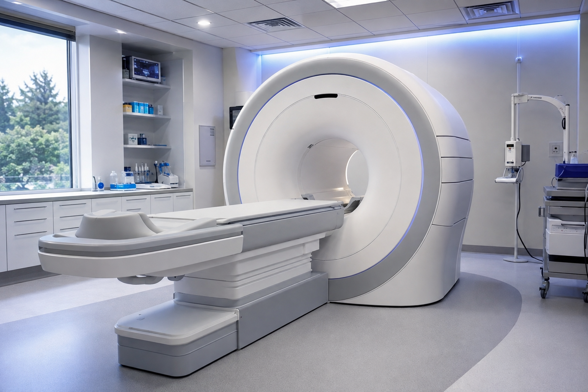
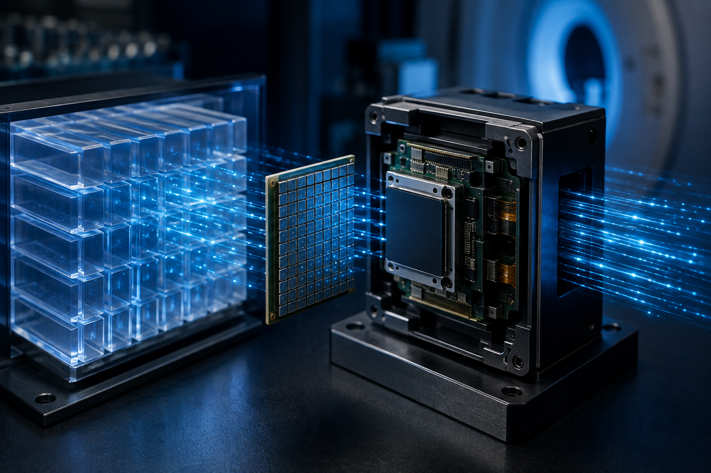

谢庆国：为全世界贡献全数字PET
“Don’t Panic”谢庆国教授办公室门上这个醒目的标识，来自科幻经典《银河系漫游指南》，提醒星际旅行者在进入未知时空的时候——不要慌。“科研之路，也不能慌。”为此，谢庆国和他的团队在这条路上跋涉19年，直到2019年6月4日下午，国家药品监督管理局公布《准产批件发布通知》：“正电子发射及X射线计算机断层成像扫描系统”（受理号：CQZ1800580）通过审批。他所发明的国产全数字PET正式进入量产通道。
- 2001年，团队成立；
- 2004年，提出MVT全数字PET方法；
- 2007年，实现了世界上首台平板PET；
- 2013年12月，首台数字PET问世；
- 2015年8月，成功开发世界首台临床全身全数字PET系统；
- 2017年11月，世界首台质子PET原理机研制成功；
- 2018年 8月，临床全身全数字PET/CT完成临床试验；
- 2018年9月，世界首台脑部专用全数字PET研制成功。

每一步，谢庆国都走得坚实有力。“数字PET终于拿到第一张医疗器械注册证，感恩领导的眼光和魄力、师长的关注和关爱、团队的情怀和坚持、同仁的鼓励与包容。以前我们描述PET技术的进步，都是说32排、64排，或者128排，排数越多就越高级，而现在，‘全数字PET’这个词本身就是我们的一大贡献。我很自豪。”
这是一个全新的事物，新事物都有一个被大众认可的漫长过程。全数字PET与传统PET的关系，好比数码相机与胶片相机，是一项革命性技术创新，是质的飞跃。谢庆国深知这一点。国产高端医疗器械从技术领先到产品领先到市场领先，不是一蹴而就的，需要大量扎扎实实的应用，在应用中不断完善产品、创新技术。
曾与谢庆国团队进行过仪器应用合作的中国科学院院士倪嘉缵认为，全数字PET从关键材料、核心元器件到系统整机全部为中国自主研发，正是自主创新的代表性成果。“长久以来，PET的核心技术一直是掌握在国际巨头手中。如今，国产全数字PET拿到市场准入后，最关键的，就是得尽快量产、做大做强，在大规模应用中不断完善全数字PET这条全新的技术路线，让国产的高端医疗器械能够早日造福民众。”
一、坚持不懈中做出国际原创
PET是正电子发射断层成像的简称，一种生化灵敏度极高的核医学分子影像技术。在恶性肿瘤、心血管疾病、神经系统疾病等重大疾病的基础研究、早期诊断、疗效评估等方面具有极大的应用价值。
“过去，GPS（GE、飞利浦、西门子）创造的PET产品在重大疾病的精准诊疗中作出了杰出贡献，也形成了成熟的技术体系。完全跟随GPS的技术路线，能够让产品开发的风险大大降低，但也始终只能做一个跟随者。”全数字PET发明人、华中科技大学教授谢庆国说道。
2001年，谢庆国创立了他的实验室。2004年，他首次提出MVT全数字采样方法；2009年研制出全数字、模块化PET探测器。2010年，全球首台数字PET科学仪器问世；2015年，鄂州市委市政府将数字PET列为“1号科技工程”进行转化，当年8月，全球首台临床全数字PET设备问世。2018年，全数字PET/CT完成临床试验。
张博是华中科技大学生命学院2018级博士生，也是数字PET项目产业化负责人之一。19年前，青年学者谢庆国选择了PET作为他的研究方向。2004年，谢庆国发明了数字PET技术，同年，张博来到华中大就读本科，并在2005年加入了谢老师的研发队伍。从本科到硕士，7年时间里，张博见证了数字PET从原理发明一步步转化成技术、产品的艰辛历程。
“记得谢老师刚刚提出数字PET概念时，业内的接受度并不高。但他却坚持不懈地在数字PET这片无人区耕耘。渐渐地，国际医疗器械巨头也看到了数字PET的价值和潜力，2009年，西门子开始提出数字化方法，2010年，飞利浦也跟着提出了它的数字化技术。如今在PET厂商中，忽如一夜春风来，满城都是‘全数字’。这让我明白了一个道理：在追求真理的道路上，只要看准了、认定了，坚持不懈地去追求了，就一定能守得云开见月明！”张博说。
2014年，正在筹备临床PET产业化的谢庆国找到当时已经硕士毕业的张博：“你是想干一份一眼可以望到老的工作，还是愿意拥有一个挑战与机遇并存的终身事业？”对于张博来说，数字PET是十几年死磕出来的硬科技，具有巨大的技术潜力和应用价值。“原来我缺少的，正是为某种事业奉献一生的归属感，数字PET就是我的终身事业！”正是抱着这样的想法，张博义无反顾地加入进来。
“创业永远是一条最艰辛的道路！”回忆起14年来跟随导师拼搏的点点滴滴，张博感慨万千。刚开始没有场地，大家只能在学校角落的一个废弃实验室落脚。四十平的场地，十来个人挤在一起，组装原型机时，为腾出空间，每张桌子都得来来回回挪动；最困难的时候，甚至连工资都发不出，大家咬紧牙关、硬是勒紧裤腰带坚持了下来。
“现在，数字PET终于拿到第一张医疗器械注册证，这意味着，我们做出了真正的国际原创，这条全新的技术路线被验证是通的、是对的！”谢庆国说，“这其中最让我们感到自豪的是，我们定义了‘数字PET’。作为衡量PET产品先进性的金标准，数字PET在某种意义上已成为一种标准、一种定义。”
“这也要感谢科技部、国家自然科学基金委和地方各级科技部门看到了数字PET的巨大潜力，大胆充当了‘天使投资人’，支撑着团队一路走下来。”谢庆国称，目前，团队累计获得各种项目经费超过2亿元，已申请500多项专利技术，授权200余项。
二、“地狱模式”下打通技术路线
在资源有限的情况下，目前这款取证产品可以说是用了一个技术挑战难度最大的系统设计，好比是玩游戏直接选了“地狱模式”。在最难的模式下打通了技术路线，后面的工作就易如反掌了！这充分显示了数字PET这个全新技术的巨大潜力。
事实上，PET数字化带来的优势不仅体现在它能发现更小的肿瘤病灶，实现早诊断早治疗，其高度模块化的设计，还具有研发快、搭建快的优势。据介绍，2015年首台临床全数字PET样机从设计到最终造出机器，只用了9个月的时间，而且投入的人员和资源都比别人低一个量级。
另一个例子是已在中山大学附属第一医院装机的首台脑部专用全数字PET。这台设备仅用3个月便完成搭建，目前，该设备已完成了多例脑部成像试验，即将在阿尔茨海默症、帕金森症等重大脑疾病的诊断和研究中大显身手。2019年8月，一名30岁的女性被这台脑部专用数字PET查出患有帕金森病，当场手持报告嚎啕大哭起来。帕金森病是一种常见的神经系统变性疾病，平均发病年龄为60岁左右，多见于老年人，但近年来逐渐有年轻化趋势。
“尽管帕金森病无法治愈，但幸运的是，这名年轻患者用PET早期诊断出了病症，只要能够在病情初期积极进行康复治疗、科学合理用药，就可以显著延缓疾病进程、从而维持更久的工作时间和生活自理时限，帕金森患者也可以拥有跟健康人一样的寿命。”脑PET临床试验负责人、中大附一医院核医学科主任张祥松介绍。
根据2017年2月发布的全国癌症登记点的数据：中国癌症患者的五年生存率仅为30.9％，不及美国的一半。中国癌症患者生存率低的重要原因之一，还是在于癌症的发现和治疗不及时。据了解，目前美国和日本每百万人口拥有PET数量达4台以上，而中国每百万人口不到0.3台。国产临床全数字PET一旦实现量产，可望大幅降低民众获取PET检查服务的门槛。
三、形成创新闭环，不易被人卡脖子
谢庆国团队做出的数字PET涵盖了从原理、系统到应用的整个创新链。产业链串接闪烁晶体关键材料、SiPM核心器件、数字PET探测器核心部件、动物全数字PET科学仪器以及临床全数字PET医疗器械，乃至影像应用服务，形成了一个创新闭环，在技术上不容易被任何人卡脖子。

弱光探测芯片是PET的核心器件，一直被西方垄断。为了将来不在产业链上受制于人，谢庆国团队从2006年开始布局新型光电转换器件的研发，并着手引进相关领域国际人才。
“数字PET这一领跑技术的出现，为整个PET产业带来链式创新，各个环节的顶尖人才也随之汇聚而来。”谢庆国介绍，除了他本人，团队其他教授也都是PET领域的新老精英：毕业于俄罗斯工程物理学院的俄罗斯籍教授Valeri Saveliev是硅光电倍增管发明人之一、光电器件领域顶尖专家；毕业于汉堡大学的意大利籍教授Nicola D'Ascenzo主攻高能粒子物理与探测技术；毕业于国立新加坡大学的肖鹏教授则专注于数字PET新型系统设计和图像重建领域。
2017年，团队成功研制出标准CMOS工艺的全数字硅光电倍增器（SiPM），性能达到国际先进水平，其研发成功对实现中国弱光光电探测技术的自主创新、提升国家工业核心竞争力具重大意义。
“我们做的是全球一流的科研，当然要在全球范围集结一流人才。”谈到两位外籍教授，谢庆国介绍道，“他们入职前已在这儿工作过相当上一段时间，我们互相看一看合不合适。2014年年底，他们确定全职在华工作。其中，Nicola更是举家搬迁到武汉，妻子也一起入职华中大，两个女儿也都成为了‘新中国人’。”
“外籍专家很纯粹，相对于国外的水准，他们在这的工资并不高。”谢庆国教授说，“他们都是看重了数字PET这个处于世界最前沿的科研平台，借助这个平台，将来这些科学家的技术可以通过产业化被真正广泛运用，从而拥有持续的生命力，这个是他们最为看重的。”
肖鹏教授补充道，总的来说，中国的大环境变了，以前国内的人才都是跑到国外发展，现在这个情况正在发生反转。“人才输出变成了人才输入。”
发生反转的，不仅仅是人才的流动模式。
随着以数字PET为轴心的科研高地的形成，团队也在源源不断地输出技术和产品，“中国正以输入技术为主反转为输出技术——这也是‘中国自信’的一部分。”肖鹏说。
2017年7月，团队在意大利成立数字PET莫里塞研究分部（PETLab@NEUROMED），该中心是意大利境内首个由中国设置的海外研究分部，双方将在此共同开展脑科学研究。2018年1月，该中心正式开始在全球范围内常年征集教授和学生加盟。
团队还与全球多所高等学校、科研院所、教学科研型医院保持了长期合作，包括美国芝加哥大学、Enrico Fermi研究所，美国加州大学伯克莱分校，美国劳伦兹伯克莱国家实验室、美国Fermi国家加速器中心，俄罗斯莫斯科工程物理学院SiPM实验室，欧洲核子中心(CERN)、芬兰国家PET中心等驰名世界的研究机构。
谢庆国表示，如今，国际上好一些的大学都会进行PET研究。中国研究PET的大学也很多。“我们比较自豪的一点就是，我们是研究PET的学校里唯一没有核物理、高能物理专业的学校。其他的大学，比如说芝加哥大学，它本身就是核物理的发源地，像早期的费米（Fermi），反应堆等。但我们依托学校优势的工科和医科交叉，从数字化技术切入，打了个出奇制胜。”
历时19年，谢庆国和团队艰苦耕耘，终于走出一条全新的数字PET技术路线，从根本上避免了知识产权的风险。如今，数字PET从科学原理创新走到临床整机装备、再到最终获得准入资质进入市场，这表明我们不仅完成了从样机到产品这个0到1的环节，还启动了从产品到商品这个1到多的环节！
谢庆国表示，数字PET出生在中国，确立了明显的技术优势，以数字PET为工具的科研平台和临床平台汇聚了越来越多的世界级科学家和临床专家团队。这样的进展，是国家扎实推进创新驱动战略的结果。虽然新技术、新产品从小众认知到大众认可有个漫长过程，在高端医疗器械领域更是如此。但越来越多的决策者和科研主体、市场主体愿意首试中国创造、助力中国创造。随着中国科技实力的提升，从前人才输出、技术输入的情况正在发生反转。数字PET正是典型的例子。